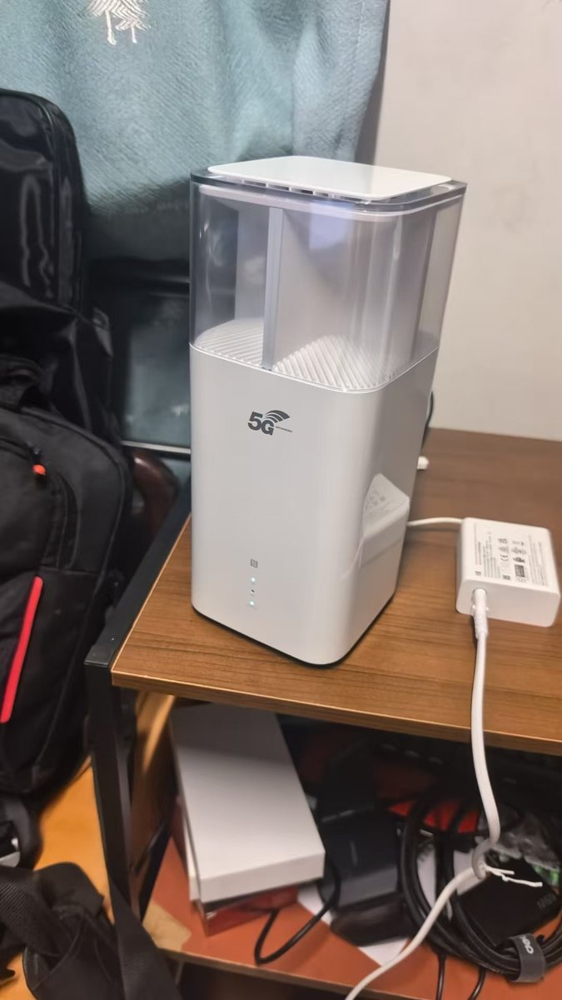

奶昔🥤
@realNyarime
用最强地表的华为5G CPE，H168-383，爽到极致，用鲲鹏的C8-688打开网页都要等一会才打开，用上这个地表最强，点击立马就加载好了，秒开网页那种。
果然还是华为yyds，放在家里窗户边上的桌子上，没有特意调整，直接开测的结果。
有人问PCDN挣钱吗，现在每天稳定30+最高37-38一天，大概是卡1.2+CPE是0.3+盒子0.008+太阳能供电套装0.08
原来用鲲鹏C8688跑，17一天，现在用这个跑，快30块钱一天了🫣🫣🫣
